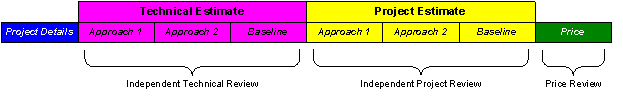

Work Product (Artifact): Estimation Report
(ART 0533)
This artifact documents the results of following the estimation process by recording the values of the estimate, along with the approach used in creating it, at each governance point. The estimate itself is created using the standard templates, tools, or models chosen by the project team.
Purpose
This artifact provides a historical record of the estimates and approaches with traceability and accountability on a
project and can be used as:
Basis for comparisons on future estimates and projects
Key inputs to improving overall estimating processes
This artifact is comprised of the following sections:

Project Details
Basic project information, such as the project name, sponsor name, and project dates, category, business
sector, and industry
Technical Estimate
Information relevant to the estimate, including a description of the project scope and solution – useful in
future comparisons across estimates and projects
A description of each approach used to estimate the project including estimation tools used, and
assumptions obtained from the selected approach
The names of those individuals involved in creating or reviewing the estimate
The resulting size, effort, schedule, and resources required to perform the technical work
Technical Baseline Estimate
The baseline estimate documents the "agreed" estimates, derived from these approaches
Project Estimate
Information relevant to the estimate, including a description of the project scope and solution – useful in
future comparisons across estimates and projects
A description of each approach used to estimate the project including estimation tools used, and
assumptions obtained from the selected approach
The names of those individuals involved in creating or reviewing the estimate
The resulting size, effort, schedule, and resources required to perform the technical work
The resulting size, effort, schedule, and resources required to perform the non-technical work
Project Baseline Estimate
The baseline estimate documents the "agreed" estimates, derived from these approaches
Price
The estimated costs and schedule to deliver this project
The names of those individuals involved in creating or reviewing the estimate
Absence of documented estimating techniques that may lead to improper and biased estimates
Absence of estimation assumptions that may result in improper risk analysis and impede future planning activities
Lack of size estimate that may result in difficulty in planning the project or work request
Lack of error or schedule estimate that may lead to improper planning, and result in schedule or budget overruns
Lack of a documented baseline against which future project actual results and estimates can be compared
Reasons for not needing
This artifact is highly recommended for use in documenting the estimating techniques, assumptions, and the estimates for
the project or work request. Different formats of the report might be used considering the specific circumstances of
a project. Reasons for not using the guidelines described in this artifact should be documented and approved by
project management.Note for pre-sale solution design (Team Solution Design users): This artifact may not be required where
services will not be part of the proposal.
Representation Options
This information may be best represented in spreadsheet format using different worksheets for each estimating approach.